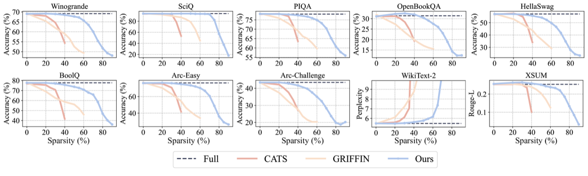

Overview — the logical flow개요 — 전체 논리 흐름
Figures from the paper논문 원본 그림



Comprehensive walkthrough전체 내용 정리
Motivation: the activation-sparsity gap in modern LLMs동기: 최신 LLM의 활성 희소성 격차
During decoding, LLM inference is memory-bound: loading weights into SRAM dominates latency. Activation sparsity helps by loading only active weight rows/columns, but it relied on ReLU zeroing negatives losslessly. Modern LLMs use SiLU/GELU, which keep small negatives, so ReLUfication needs up to 150B tokens (~1 month on 64 A100s). Output-sparsity methods also need to predict active channels first, and training-free methods cap at ~50% MLP sparsity (≈33% model-level). The authors ask whether the non-sparse activation portion is truly necessary or can be cheaply approximated.
디코딩 단계에서 LLM 추론은 메모리 바운드이며, 가중치를 SRAM으로 로딩하는 비용이 지연을 지배한다. 활성 희소화는 활성 가중치 행/열만 로딩해 도움을 주지만, 음수를 무손실로 0으로 만드는 ReLU에 의존했다. 최신 LLM은 작은 음수를 유지하는 SiLU/GELU를 써서 ReLU화에는 최대 1500억 토큰(64개 A100에서 약 1개월)이 든다. 출력 희소화 방식은 활성 채널을 먼저 예측해야 하고, 학습 불필요 기법은 MLP 희소성 약 50%(모델 수준 약 33%)가 한계다. 저자들은 비희소 활성 부분이 정말 필요한지, 저렴하게 근사할 수 없는지 묻는다.
Observation I: non-sparse components are biases관찰 I: 비희소 성분은 편향이다
They define a soft multi-phase ReLU σ_T that rounds small activations into l discrete levels (l=1 is standard ReLU sparsity). On Llama-2-7B (OBQA, ARC-C), raising l from 1 to 2 recovers the accuracy lost even at 90% sparsity. Formally, the residual output Y_r = Σ_j (T_j+T_{j+1})/2 · Σ_{k∈U_j} W_down[:,k], where each inner sum is a data-dependent bias B_j. So just two biases per token approximate the non-sparse output and push sparsity to 90%.
작은 활성값을 l개 이산 값으로 반올림하는 소프트 다단계 ReLU σ_T를 정의한다(l=1은 표준 ReLU 희소화). Llama-2-7B(OBQA, ARC-C)에서 l을 1에서 2로 올리면 90% 희소성에서도 손실된 정확도가 회복된다. 형식적으로 잔차 출력 Y_r = Σ_j (T_j+T_{j+1})/2 · Σ_{k∈U_j} W_down[:,k]이며, 내부 합 각각이 데이터 의존 편향 B_j다. 즉 토큰당 단 두 개의 편향이 비희소 출력을 근사하고 희소성을 90%까지 끌어올린다.
Observation II: rank-aware structure관찰 II: 랭크-인지 구조
Concatenating 4000 biases from 2000 tokens forms a matrix M with stable rank ≈400 — a low-rank structure. Linking this to weights, for Y=XWᵀ with W=UΣVᵀ, the score S_{i,j}=σ_i·X_j·V[j,i] measures the contribution of input channel j and SVD component i. The distribution (Figure 3) concentrates in the bottom-right (large channels × dominant singular values). Patterns vary by layer: o.proj relies more on small singular values than q/k.proj; middle layers are more sparsifiable than the first/last layers. The structure is stable across sample counts (1–1024) and datasets (C4, ArXiv, GitHub, StackExchange, Wikipedia).
2000개 토큰의 편향 4000개를 이어 붙이면 안정 랭크 약 400의 행렬 M, 즉 저랭크 구조가 된다. 이를 가중치와 연결하면, W=UΣVᵀ인 Y=XWᵀ에서 점수 S_{i,j}=σ_i·X_j·V[j,i]가 입력 채널 j와 SVD 성분 i의 기여를 측정한다. 분포(그림 3)는 우하단(큰 채널 × 지배적 특이값)에 집중된다. 패턴은 층마다 다르다. o.proj는 q/k.proj보다 작은 특이값에 더 의존하고, 중간 층은 첫/마지막 층보다 희소화가 쉽다. 이 구조는 샘플 수(1~1024)와 데이터셋(C4, ArXiv, GitHub, StackExchange, Wikipedia) 전반에서 안정적이다.
Method: R-Sparse decomposition방법: R-Sparse 분해
Each linear layer Y=XWᵀ becomes Y=Y_s+Y_r. The sparse path Y_s = σ_{t(s)}(X)Wᵀ keeps only input channels with |X_j|≥t(s) and loads just the corresponding weight rows (stored column-major for bandwidth). The low-rank path Y_r = (X − σ_{t(s)}(X))(A_r B_r)ᵀ sends the remaining small channels through A_r=U_r Σ_r^{1/2}, B_r=Σ_r^{1/2} Vᵀ, selecting top-r SVD components by the score map. Because the SVD is done once offline, it adds no inference latency. Unlike CATS (which thresholds gate-projection output, MLP only), R-Sparse thresholds the input and applies to all attention and MLP linear layers, enabling higher overall sparsity.
각 선형 층 Y=XWᵀ는 Y=Y_s+Y_r이 된다. 희소 경로 Y_s = σ_{t(s)}(X)Wᵀ는 |X_j|≥t(s)인 입력 채널만 남기고 해당 가중치 행만 로딩한다(대역폭을 위해 열 우선 저장). 저랭크 경로 Y_r = (X − σ_{t(s)}(X))(A_r B_r)ᵀ는 남은 작은 채널을 A_r=U_r Σ_r^{1/2}, B_r=Σ_r^{1/2} Vᵀ로 보내며 점수 맵으로 상위 r개 SVD 성분을 고른다. SVD는 한 번 오프라인으로 수행되어 추론 지연을 더하지 않는다. 게이트 투영 출력을 임계 처리하고 MLP에만 적용하는 CATS와 달리, R-Sparse는 입력을 임계 처리해 모든 어텐션·MLP 선형 층에 적용되어 더 높은 전체 희소성을 가능케 한다.
Optimal recipe via evolutionary search진화 탐색을 통한 최적 레시피
Since layers differ, a per-layer ratio ρ_i splits the budget C_i: sparse size s_i=ρ_i C_i, rank r_i=(1−ρ_i)C_i·mn/(m+n). An evolutionary search (Algorithm 1: population 32, mutation and crossover rates both 0.5, 5 generations, group-wise updates with group size 28) minimizes average perplexity over 16 C4 samples. The search costs only ~1 hour on a single A6000 for Llama-2-7B — fully training-free, since the base model is frozen.
층마다 특성이 달라, 층별 비율 ρ_i가 예산 C_i를 분배한다. 희소 크기 s_i=ρ_i C_i, 랭크 r_i=(1−ρ_i)C_i·mn/(m+n). 진화 탐색(알고리즘 1: 개체군 32, 돌연변이·교차율 각 0.5, 5세대, 그룹 크기 28의 그룹별 갱신)이 C4 샘플 16개의 평균 perplexity를 최소화한다. Llama-2-7B 기준 단일 A6000에서 약 1시간이면 끝나며, 기반 모델은 동결되므로 완전히 학습 불필요하다.
Main experiments주요 실험
On Llama-2-7B, Llama-3-8B, and Mistral-7B across eight common-sense reasoning tasks plus WikiText-2 (perplexity) and XSUM (Rouge-L), R-Sparse at 50% model sparsity nearly matches the dense model (Llama-2-7B 65.88→64.06 avg; Llama-3-8B 69.44→66.20; Mistral-7B 69.89→68.39). At matched budgets it crushes baselines: R-Sparse 40% averages 65.00 vs CATS 40% at 46.26, and R-Sparse 50% averages 64.06 vs GRIFFIN 50% at 45.91 on Llama-2-7B (~18% gains). Three drivers: (1) it sparsifies attention plus MLP, (2) rank-aware approximation beats pure sparsity, (3) the searched ρ adapts to layer rank.
Llama-2-7B, Llama-3-8B, Mistral-7B에서 상식 추론 8개 과제와 WikiText-2(perplexity), XSUM(Rouge-L)에 걸쳐, 50% 모델 희소성의 R-Sparse는 밀집 모델과 거의 동등하다(Llama-2-7B 평균 65.88→64.06, Llama-3-8B 69.44→66.20, Mistral-7B 69.89→68.39). 동일 예산에서는 기준선을 압도한다. Llama-2-7B에서 R-Sparse 40%는 평균 65.00(CATS 40%는 46.26), R-Sparse 50%는 평균 64.06(GRIFFIN 50%는 45.91)으로 약 18% 앞선다. 세 요인: (1) 어텐션과 MLP를 함께 희소화, (2) 랭크-인지 근사가 순수 희소화보다 우수, (3) 탐색된 ρ가 층 랭크에 적응.
Efficiency and quantization compatibility효율성과 양자화 호환성
With a custom Triton kernel reducing SRAM↔HBM traffic and uniform 50% sparsity (FP32, single A6000, no offloading), R-Sparse delivers up to 42% (Llama-2-7B) and 40% (Llama-3-8B) decoding speedup over dense, ~43% end-to-end overall. It composes with 4-bit GPTQ: INT4 R-Sparse 50% averages 65.76 vs the FP16 full model's 68.10 and INT4-only 67.32 (WG/PIQA/SciQ/OBQA), suggesting further gains from fused sparse-quant kernels.
SRAM↔HBM 트래픽을 줄이는 맞춤형 Triton 커널과 균일 50% 희소성(FP32, 단일 A6000, 오프로딩 없음)으로 R-Sparse는 밀집 대비 최대 42%(Llama-2-7B), 40%(Llama-3-8B) 디코딩 속도 향상, 종단간 전체 약 43%를 제공한다. 4비트 GPTQ와도 결합된다. INT4 R-Sparse 50%는 평균 65.76(WG/PIQA/SciQ/OBQA)으로 FP16 원본 68.10, INT4 단독 67.32에 근접하며, 희소-양자화 융합 커널로 추가 이득 가능성을 시사한다.
Ablations and limitations제거 실험과 한계
Ablations confirm each piece: vs pure Sparse (66.25) and Low-Rank (33.05, which collapses), R-Sparse reaches 67.50; adaptive search beats uniform ρ=0.95 by up to +1.95 (OBQA), with larger gains at higher sparsity (e.g., +2.60 at 70% on OBQA vs +0.80 at 50%). Limitations: KV-cache compression is out of scope (called orthogonal, left to future work); sparsification is applied only at the decoding stage; efficiency numbers use FP32 on a single A6000; and the layer-wise ρ search, while cheap, still requires calibration data (16 C4 samples) and adds a per-model search step.
제거 실험이 각 구성요소를 확인한다. 순수 희소화(66.25)와 저랭크(33.05, 붕괴) 대비 R-Sparse는 67.50에 도달하고, 적응 탐색은 균일 ρ=0.95 대비 최대 +1.95(OBQA) 우수하며 높은 희소성에서 이득이 커진다(OBQA 70%에서 +2.60 대 50%에서 +0.80). 한계: KV 캐시 압축은 범위 밖(직교적이라 향후 과제로 남김), 희소화는 디코딩 단계에만 적용, 효율 수치는 단일 A6000의 FP32 기준이며, 층별 ρ 탐색은 저렴하지만 보정 데이터(C4 16샘플)와 모델별 탐색 단계가 필요하다.
Key results — Llama-2-7B, matched model-level sparsity핵심 결과 — Llama-2-7B, 동일 모델 수준 희소성
| Method | WG | PIQA | SciQ | OBQA | BoolQ | Arc-C | Average |
|---|---|---|---|---|---|---|---|
| Llama-2-7B (full) | 69.14 | 78.07 | 93.80 | 31.40 | 77.71 | 43.43 | 65.88 |
| CATS 40% | 55.01 | 66.97 | 57.20 | 20.20 | 62.81 | 27.56 | 46.26 |
| R-Sparse 40% | 68.03 | 77.31 | 93.90 | 30.80 | 75.99 | 42.66 | 65.00 |
| GRIFFIN 50% | 53.59 | 64.74 | 77.70 | 17.40 | 56.42 | 21.08 | 45.91 |
| R-Sparse 50% | 67.40 | 77.31 | 93.90 | 31.40 | 72.84 | 40.78 | 64.06 |
Actual numbers from Table 1 (8-task average column shown; SciQ/HS/Arc-E columns omitted for width). At 50% model sparsity R-Sparse stays within ~1.8 pts of the full model (65.88→64.06) while CATS/GRIFFIN collapse by ~20 pts at comparable budgets — an ~18% average gain. R-Sparse also reports up to 43% decoding speedup (custom Triton kernel) and INT4-GPTQ compatibility (65.76 avg on WG/PIQA/SciQ/OBQA).
표 1의 실제 수치(8개 과제 평균 열 표시, 폭 관계로 SciQ/HS/Arc-E 열 생략). 50% 모델 희소성에서 R-Sparse는 원본과 약 1.8점 이내(65.88→64.06)인 반면, 유사 예산의 CATS/GRIFFIN은 약 20점 붕괴하여 평균 약 18% 이득. R-Sparse는 또한 최대 43% 디코딩 속도 향상(맞춤 Triton 커널)과 INT4-GPTQ 호환성(WG/PIQA/SciQ/OBQA 평균 65.76)을 보고한다.
✅ Strengths✅ 강점
Genuinely novel reframing: input-side sparsity + weight SVD on a unified score grid참신한 재구성: 입력측 희소성과 가중치 SVD를 하나의 점수 격자에서 통합
The core conceptual move is solid. The paper unifies activation sparsity (which removes left columns of the channel x singular-value score matrix S) and low-rank decomposition (which removes top rows) into a single picture, then argues the important mass sits in the bottom-right, so the right move is to cut the top-left. Routing non-sparse (small-magnitude) channels through an offline low-rank module sidesteps the active-channel prediction problem that plagues output-sparsity methods (Deja Vu, CATS, GRIFFIN) and is genuinely training-free, working on non-ReLU SiLU/GELU models. This is a clean, defensible idea.
핵심 개념적 전환이 탄탄하다. 활성 희소성(채널 x 특이값 점수 행렬 S의 왼쪽 열 제거)과 저랭크 분해(위쪽 행 제거)를 하나의 그림으로 통합한 뒤, 중요한 질량이 우하단에 모인다고 보고 좌상단을 잘라내는 것이 옳다고 주장한다. 비희소(작은 크기) 채널을 오프라인 저랭크 모듈로 라우팅함으로써 출력 희소성 기법(Deja Vu, CATS, GRIFFIN)을 괴롭히던 활성 채널 예측 문제를 우회하며, 진정으로 학습이 필요 없고 비ReLU SiLU/GELU 모델에서 동작한다. 깔끔하고 방어 가능한 아이디어다.
Strong, consistent accuracy gains over training-free baselines at matched sparsity동일 희소성에서 학습 불필요 베이스라인 대비 강하고 일관된 정확도 향상
At matched model-level sparsity, R-Sparse beats CATS and GRIFFIN by large margins (reported ~18% average on Llama-2-7B at 40-50%), and crucially these baselines collapse hard when pushed past their native sparsity (CATS-40%, GRIFFIN-50% drop to the 45-46 range while R-Sparse stays near full-model). The effect holds across three model families and ten tasks, so the comparative advantage at high sparsity is not cherry-picked to one model.
동일한 모델 수준 희소성에서 R-Sparse는 CATS와 GRIFFIN을 큰 차이로 앞선다(Llama-2-7B 40-50%에서 평균 약 18% 보고). 결정적으로 이 베이스라인들은 고유 희소성을 넘어서면 급격히 붕괴하는데(CATS-40%, GRIFFIN-50%는 45-46대로 하락) R-Sparse는 풀 모델 근처를 유지한다. 세 모델 패밀리와 열 개 과제에서 성립하므로 고희소성에서의 비교 우위가 한 모델에만 맞춘 것은 아니다.
Empirically grounded layer-wise heterogeneity motivating adaptive search적응적 탐색을 정당화하는 층별 이질성의 경험적 근거
The observation that o.proj relies more on small singular values while q.proj/k.proj are easily low-rank approximated, and that middle layers tolerate more sparsity than first/last, is consistent with prior literature (Jaiswal et al., Yin et al.) and is used to justify the per-layer evolutionary search of the sparse/low-rank ratio rho. The ablation (Table 4) shows the adaptive recipe beats uniform rho=0.95 by up to ~2.6% at high sparsity, so the search is not pure decoration.
o.proj는 작은 특이값에 더 의존하고 q.proj/k.proj는 저랭크 근사가 쉬우며, 중간 층이 첫/마지막 층보다 희소화를 더 견딘다는 관찰은 선행 연구(Jaiswal 등, Yin 등)와 일치하며, 층별 sparse/low-rank 비율 rho의 진화적 탐색을 정당화한다. 절제 실험(표 4)은 적응적 레시피가 고희소성에서 균일 rho=0.95를 최대 약 2.6% 앞섬을 보여, 탐색이 단순 장식이 아님을 나타낸다.
Composability with quantization shown empirically양자화와의 결합 가능성을 경험적으로 입증
Table 2 demonstrates R-Sparse stacks with 4-bit GPTQ weight quantization with only a small additional accuracy drop (INT4 + R-Sparse-50% at 65.76 vs full FP16 68.10), supporting the claim that the method is orthogonal to quantization rather than just asserting it. This is a useful, concrete result for practitioners who must combine compression techniques.
표 2는 R-Sparse가 4비트 GPTQ 가중치 양자화와 결합 가능하며 추가 정확도 하락이 작음을 보인다(INT4 + R-Sparse-50%가 65.76, 풀 FP16은 68.10). 단순 주장에 그치지 않고 양자화와 직교함을 뒷받침한다. 압축 기법을 결합해야 하는 실무자에게 유용하고 구체적인 결과다.
Consistent gains over training-free baselines at matched model-level sparsity동일 모델 레벨 희소도에서 학습-불요 베이스라인 대비 일관된 성능 우위
At equal model-level sparsity budgets the method beats CATS and GRIFFIN on Llama-2-7B, Llama-3-8B and Mistral-7B across the 8 common-sense tasks (e.g. R-Sparse 50% averages ~64-68 vs GRIFFIN 50% averaging ~45-48 in Table 1). The comparison is made fairer by re-expressing all baselines at the model level and scaling up baseline MLP sparsity to match, rather than only citing the baselines' favorable native ratios.
동일한 모델 레벨 희소도 예산에서 Llama-2-7B, Llama-3-8B, Mistral-7B의 8개 상식 추론 과제 전반에 걸쳐 CATS와 GRIFFIN을 능가한다(예: 표 1에서 R-Sparse 50%는 평균 약 64-68, GRIFFIN 50%는 약 45-48). 모든 베이스라인을 모델 레벨로 재환산하고 베이스라인 MLP 희소도를 맞춰 비교함으로써, 베이스라인에 유리한 고유 비율만 인용하지 않은 점에서 비교가 비교적 공정하다.
Sparsity ratio swept as a curve, not a single cherry-picked point단일 체리피킹 지점이 아닌 곡선 형태의 희소도 스윕
Figure 5 reports performance across a continuum of model-level sparsity (roughly 30-70%) for reasoning, language modeling and summarization, and Table 4 extends the recipe ablation across 40/50/60/70%. This makes the accuracy-vs-sparsity trade-off falsifiable rather than resting on one favorable operating point, and surfaces where degradation accelerates (beyond ~50%).
그림 5는 추론, 언어 모델링, 요약에 대해 연속적인 모델 레벨 희소도(대략 30-70%) 전반의 성능을 보고하며, 표 4는 레시피 절제 실험을 40/50/60/70%로 확장한다. 이는 정확도 대 희소도 트레이드오프를 단일 유리 지점에 의존하지 않고 반증 가능하게 만들며, 성능 저하가 가속되는 지점(약 50% 초과)을 드러낸다.
Calibration-data generalization is partially probed보정 데이터에 대한 일반화를 부분적으로 검증
Appendix B.2 repeats the channel/singular-value importance analysis across sample counts (N=1 to 1024) and across RedPajama domains (GitHub, ArXiv, StackExchange, Wikipedia, C4), showing the importance patterns are stable. This directly addresses the worry that the core structural observation is an artifact of one 16-sample C4 calibration set.
부록 B.2는 채널/특이값 중요도 분석을 샘플 수(N=1~1024)와 RedPajama 도메인(GitHub, ArXiv, StackExchange, Wikipedia, C4) 전반에 걸쳐 반복하여 중요도 패턴이 안정적임을 보인다. 이는 핵심 구조적 관찰이 단일 16-샘플 C4 보정 집합의 산물일 수 있다는 우려를 직접 다룬다.
Orthogonality to quantization shown empirically양자화와의 직교성을 실증적으로 입증
Table 2 stacks R-Sparse on top of 4-bit GPTQ and shows accuracy stays close to the FP16/INT4 baselines (e.g. 65.76% at 50% sparsity + INT4 vs 68.10% FP16), supporting the claim that the gains compose with weight compression rather than competing with it.
표 2는 R-Sparse를 4비트 GPTQ 위에 적층하여 정확도가 FP16/INT4 베이스라인에 근접함을 보인다(예: 50% 희소도 + INT4에서 65.76% 대 FP16 68.10%). 이는 성능 이득이 가중치 압축과 경쟁하지 않고 결합된다는 주장을 뒷받침한다.
⚔️ Weaknesses, gaps & suspicious points⚔️ 약점·부족한 점·의심 포인트
Headline 43% speedup is measured in FP32, the worst-case baseline for a memory-bound claim대표 수치 43% 가속은 FP32에서 측정 — 메모리 바운드 주장에 가장 유리한 최악의 베이스라인
The efficiency section (Sec 4.3) states the implementation uses 'FP32 precision data format' on a single A6000. The entire motivation is that decoding is memory-bandwidth-bound, so weight I/O dominates. FP32 doubles the bytes-per-weight versus the FP16/BF16 that essentially all real deployments use, inflating the absolute memory traffic that R-Sparse then reduces. A method whose sole speed lever is cutting weight I/O will look far better against an artificially fat FP32 baseline; the 42-43% number may shrink substantially in FP16, and there is no FP16 speed measurement to bound this. The abstract's '43% end-to-end improvement' is thus a best-case, non-representative configuration presented as the headline.
효율성 절(4.3절)은 단일 A6000에서 'FP32 정밀도 데이터 포맷'을 사용한다고 명시한다. 전체 동기는 디코딩이 메모리 대역폭 바운드라서 가중치 I/O가 지배적이라는 것이다. FP32는 사실상 모든 실배포가 쓰는 FP16/BF16 대비 가중치당 바이트를 두 배로 늘려, R-Sparse가 줄이는 절대 메모리 트래픽을 부풀린다. 유일한 가속 수단이 가중치 I/O 절감인 기법은 인위적으로 비대한 FP32 베이스라인 대비 훨씬 좋아 보이며, 42-43% 수치는 FP16에서 크게 줄어들 수 있는데 이를 한정할 FP16 속도 측정이 없다. 따라서 초록의 '43% 종단 개선'은 최선의 비대표적 구성을 대표 수치로 제시한 것이다.
'Without any performance loss' contradicts the paper's own tables'성능 손실 없음' 주장은 논문 자체 표와 모순
The conclusion states R-Sparse achieves high sparsity 'without any performance loss,' and the abstract/intro say 'comparable performance.' But Table 1 shows real degradation: Llama-3-8B drops from 69.44 to 66.20 average at 50% (-3.24), with Arc-C falling 50.51 to 44.71 (-5.8) and HellaSwag 60.18 to 56.64. Mistral and Llama-2 also lose 1-2.5 points. 'No performance loss' is an overclaim; the honest statement is a measurable few-point drop. The degradation is also uneven across tasks (reasoning-heavy Arc-C, HellaSwag suffer most), which the 'comparable' framing obscures.
결론은 R-Sparse가 '성능 손실 없이' 높은 희소성을 달성한다고 하고, 초록/서론은 '비슷한 성능'이라 한다. 그러나 표 1은 실제 하락을 보인다: Llama-3-8B는 50%에서 평균 69.44에서 66.20로(-3.24), Arc-C는 50.51에서 44.71로(-5.8), HellaSwag는 60.18에서 56.64로 떨어진다. Mistral과 Llama-2도 1-2.5점을 잃는다. '성능 손실 없음'은 과장이며, 솔직한 서술은 측정 가능한 수 점의 하락이다. 또한 하락이 과제별로 불균등하여(추론 중심 Arc-C, HellaSwag가 가장 심함) '비슷함'이라는 프레이밍이 이를 가린다.
Low-rank residual path adds I/O and compute that the sparsity accounting hides저랭크 잔차 경로가 추가 I/O와 연산을 더하나 희소성 회계가 이를 숨김
R-Sparse computes Y = sigma(X)W^T + (X - sigma(X))(A_r B_r)^T. The second term is never skipped: every decoding step still pays for loading the SVD factors A_r, B_r and a dense rank-r matmul over the residual. The paper folds this into a memory-I/O formula (r(m+n)/mn + s) and reports a single 'model-level sparsity' number, but it never reports actual measured FLOPs or arithmetic intensity, never reports the extra storage for storing A_r/B_r for all 7 linear layers x all blocks (a non-trivial parameter-memory overhead that partly offsets the sparsity), and never isolates how much of the 43% comes from sparsity vs is eaten by the low-rank path. The single conflated sparsity metric makes the cost-benefit unauditable.
R-Sparse는 Y = sigma(X)W^T + (X - sigma(X))(A_r B_r)^T를 계산한다. 두 번째 항은 결코 건너뛰지 않는다. 매 디코딩 단계마다 SVD 인자 A_r, B_r 로딩과 잔차에 대한 밀집 랭크-r 행렬곱 비용을 치른다. 논문은 이를 메모리 I/O 공식(r(m+n)/mn + s)에 접어 넣고 단일 '모델 수준 희소성' 수치만 보고할 뿐, 실제 측정 FLOPs나 산술 강도를 보고하지 않고, 모든 7개 선형층 x 모든 블록에 A_r/B_r을 저장하는 추가 저장 비용(희소성을 부분 상쇄하는 비자명한 파라미터 메모리 오버헤드)을 보고하지 않으며, 43% 중 얼마가 희소성에서 오고 얼마가 저랭크 경로에 잠식되는지 분리하지 않는다. 단일 혼합 희소성 지표는 비용-효익을 감사 불가능하게 만든다.
Per-token magnitude thresholding cost is asserted away, not measured토큰별 크기 임계화 비용을 측정 없이 무시
The sparse mask requires computing the s-th percentile threshold t(s) of |X| at every linear layer for every decoded token, then a gather/scatter to drop columns. On the narrow batch-1 decoding the paper targets, this selection/sort overhead and the irregular memory access for column gathering are exactly the costs that usually erase theoretical activation-sparsity speedups, yet the paper offers no microbenchmark of the kernel's thresholding overhead, no breakdown of kernel time vs matmul time, and no batch-size sweep (all speed results appear to be batch 1, the most favorable memory-bound regime). The claim that the offline SVD 'won't impact latency' is true for the SVD itself but silently ignores the per-token runtime cost of the dynamic sparse path.
희소 마스크는 모든 디코딩 토큰에 대해 각 선형층에서 |X|의 s번째 백분위 임계값 t(s)를 계산하고 열을 버리는 gather/scatter를 요구한다. 논문이 목표하는 좁은 배치-1 디코딩에서 이 선택/정렬 오버헤드와 열 수집의 불규칙 메모리 접근은 보통 이론적 활성 희소성 가속을 지워버리는 바로 그 비용이다. 그런데 논문은 커널 임계화 오버헤드 마이크로벤치마크도, 커널 시간 대 행렬곱 시간 분해도, 배치 크기 스윕도 제공하지 않는다(모든 속도 결과가 가장 유리한 메모리 바운드 영역인 배치 1로 보임). 오프라인 SVD가 '지연에 영향 없다'는 주장은 SVD 자체엔 참이나 동적 희소 경로의 토큰별 런타임 비용을 슬그머니 무시한다.
Evolutionary search risks overfitting to 16 C4 samples with no separate test16개 C4 샘플에 대한 진화 탐색 과적합 위험, 별도 검증 없음
The per-layer ratios rho are searched by minimizing perplexity on just 16 C4 samples, and the same C4 data is used for the importance-score estimation and the uniform rho=0.95 grid search. With one rho per layer (~32 free parameters for a 7B model) tuned on 16 samples, there is real overfitting risk to the calibration distribution. The paper shows importance patterns are stable across datasets (Fig 8/9) but never validates the searched recipe itself on a held-out calibration set, nor reports variance across random C4 draws or search seeds. Given the evolutionary search is stochastic and run once (1 hour, 5 generations), the reported gains lack any error bars, so it is unclear the adaptive-vs-uniform deltas (often ~1%) exceed run-to-run noise.
층별 비율 rho는 단 16개 C4 샘플의 퍼플렉서티 최소화로 탐색되며, 같은 C4 데이터가 중요도 점수 추정과 균일 rho=0.95 격자 탐색에도 쓰인다. 층당 하나의 rho(7B 모델 기준 약 32개 자유 파라미터)를 16샘플로 튜닝하면 보정 분포 과적합 위험이 실재한다. 논문은 중요도 패턴이 데이터셋 간 안정적임을 보이지만(그림 8/9), 탐색된 레시피 자체를 별도 보정 집합으로 검증하지 않고 무작위 C4 추출이나 탐색 시드에 따른 분산도 보고하지 않는다. 진화 탐색은 확률적이고 한 번만 실행되므로(1시간, 5세대) 보고된 향상에 오차 막대가 없어, 적응 대 균일 차이(흔히 약 1%)가 실행 간 잡음을 넘는지 불분명하다.
Baseline-fairness framing favors R-Sparse via attention-block sparsity asymmetry어텐션 블록 희소성 비대칭으로 베이스라인 공정성 프레이밍이 R-Sparse에 유리
The paper attributes much of its 18% margin to R-Sparse sparsifying attention blocks while CATS/GRIFFIN only touch MLP. But the comparison is structured so the baselines are pushed to high model-level sparsity by over-sparsifying only their MLP blocks (e.g., scaling CATS MLP sparsity well past 50%), the regime where they are known to break, rather than giving them the same attention+MLP coverage. Appendix B.1 even shows GRIFFIN-All (attention included) is worse and is therefore excluded from the main comparison. So the main table compares R-Sparse-everywhere against MLP-only baselines crippled into their failure mode, then credits the gap to R-Sparse's design. A fairer comparison would distribute each baseline's sparsity budget more naturally; the current framing inflates the apparent advantage.
논문은 18% 격차의 상당 부분을 R-Sparse가 어텐션 블록을 희소화하는 반면 CATS/GRIFFIN은 MLP만 건드린다는 점에 돌린다. 그러나 비교는 베이스라인을 MLP 블록만 과도하게 희소화하여(예: CATS MLP 희소성을 50% 한참 넘게 키움) 높은 모델 수준 희소성으로 몰아붙이는 방식으로 구성되는데, 이는 그들이 깨지는 것으로 알려진 영역이다. 부록 B.1은 GRIFFIN-All(어텐션 포함)이 더 나쁘다며 본 비교에서 제외한다. 즉 본 표는 R-Sparse(전방위) 대 실패 모드로 몰린 MLP 전용 베이스라인을 비교한 뒤 그 격차를 R-Sparse 설계 공으로 돌린다. 더 공정한 비교는 각 베이스라인의 희소성 예산을 더 자연스럽게 배분할 것이며, 현 프레이밍은 겉보기 우위를 부풀린다.
Efficiency measured in FP32 against a dense FP32 baseline, inflating the speedupFP32 밀집 베이스라인 대비 FP32에서 측정된 효율로 속도 향상이 과장됨
All speed experiments (Section 4.3) use the HuggingFace library in FP32 precision on a single A6000, and the 40-43% speedup is reported against a dense FP32 model. Real edge/on-device deployment - the paper's stated motivation - runs in FP16/INT4 with optimized runtimes (vLLM, llama.cpp, TensorRT). Memory-bound decode speedups from activation sparsity shrink substantially once the dense baseline is FP16 (half the bytes to move). No FP16 dense baseline, no optimized-runtime comparison, and no batch size is reported, so the headline 43% may not survive a realistic baseline.
모든 속도 실험(4.3절)은 단일 A6000에서 HuggingFace 라이브러리를 FP32 정밀도로 사용하며, 40-43% 속도 향상은 밀집 FP32 모델 대비 보고된다. 논문이 내세운 동기인 실제 엣지/온디바이스 배포는 최적화된 런타임(vLLM, llama.cpp, TensorRT)에서 FP16/INT4로 동작한다. 활성화 희소성에서 오는 메모리 바운드 디코드 속도 향상은 밀집 베이스라인이 FP16(이동 바이트 절반)이 되면 크게 줄어든다. FP16 밀집 베이스라인도, 최적화 런타임 비교도, 배치 크기 보고도 없어 대표값 43%가 현실적 베이스라인에서 유지될지 불확실하다.
No seeds, no variance, no error bars anywhere despite tiny calibration sets극소 보정 집합에도 불구하고 시드/분산/오차 막대가 전혀 없음
Both the core observation and the evolutionary search rely on only 16 random C4 samples, and the evolutionary search itself is stochastic (random mutation/crossover, random init). Yet no result reports seeds, number of runs, standard deviation, or error bars. Sub-1% claimed gains (e.g. +0.98% over the Sparse baseline in Table 3, +0.89% on Arc-E in Table 4) are within plausible run-to-run noise of a 16-sample-calibrated stochastic search and cannot be judged significant as presented.
핵심 관찰과 진화 탐색 모두 단 16개의 무작위 C4 샘플에 의존하며, 진화 탐색 자체가 확률적이다(무작위 변이/교차, 무작위 초기화). 그럼에도 어떤 결과도 시드, 실행 횟수, 표준편차, 오차 막대를 보고하지 않는다. 1% 미만의 주장된 이득(예: 표 3에서 Sparse 베이스라인 대비 +0.98%, 표 4 Arc-E의 +0.89%)은 16-샘플로 보정된 확률적 탐색의 실행 간 잡음 범위 내일 수 있어 제시된 대로는 유의미하다고 판단할 수 없다.
'Comparable / no performance loss' overstated relative to the actual numbers'comparable / 성능 손실 없음' 주장이 실제 수치 대비 과장됨
The abstract and conclusion claim comparable performance and even 'without any performance loss' at 50% sparsity, but Table 1 shows consistent drops: Llama-3-8B average falls 69.44 -> 66.20 (-3.24) and Arc-C 50.51 -> 44.71 (-5.80); Mistral Arc-C 50.85 -> 47.18 (-3.67). Figure 5 also shows degradation accelerating past 50%. These are measurable losses, and the 'no performance loss' framing is not supported by the authors' own tables.
초록과 결론은 50% 희소도에서 comparable 성능, 심지어 '성능 손실 없음'을 주장하지만, 표 1은 일관된 하락을 보인다: Llama-3-8B 평균 69.44 -> 66.20(-3.24), Arc-C 50.51 -> 44.71(-5.80); Mistral Arc-C 50.85 -> 47.18(-3.67). 그림 5 또한 50% 초과 시 저하가 가속됨을 보인다. 이는 측정 가능한 손실이며, '성능 손실 없음'이라는 표현은 저자 자신의 표로 뒷받침되지 않는다.
Evaluation narrow: only base 7-8B models, only multiple-choice/loglikelihood tasks평가가 협소함: 베이스 7-8B 모델, 객관식/로그우도 과제에만 한정
Only Llama-2-7B, Llama-3-8B and Mistral-7B (all base, all ~7-8B) are tested. There are no instruction-tuned/chat models, no 13B/70B scale, and no generative or reasoning-heavy benchmarks (MMLU, GSM8K, HumanEval, IFEval, free-form generation quality). Eight of the ten tasks are loglikelihood-scored multiple choice, which is far more forgiving of activation perturbation than open-ended decoding. The on-device-deployment motivation targets chat assistants, exactly the setting not evaluated.
Llama-2-7B, Llama-3-8B, Mistral-7B(모두 베이스, 모두 약 7-8B)만 시험된다. 명령어 튜닝/챗 모델, 13B/70B 규모, 생성·고난도 추론 벤치마크(MMLU, GSM8K, HumanEval, IFEval, 자유 생성 품질)가 전혀 없다. 10개 과제 중 8개가 로그우도 채점 객관식으로, 개방형 디코딩보다 활성화 교란에 훨씬 관대하다. 온디바이스 배포 동기는 챗 어시스턴트를 겨냥하지만 바로 그 설정이 평가되지 않았다.
No kernel/latency comparison against the baselines it claims to beat능가한다고 주장하는 베이스라인과의 커널/지연 비교 부재
The accuracy comparison is against CATS and GRIFFIN, but the efficiency comparison (Figure 6) is only R-Sparse vs Dense. CATS and GRIFFIN also have custom kernels and lower model-level sparsity overhead (no attention sparsification, no low-rank SVD branch). R-Sparse adds a low-rank branch and column-major reshuffling to every linear layer; whether its speed-at-iso-accuracy actually beats CATS/GRIFFIN is never measured. No peak-memory or memory-savings numbers are given either, despite memory being the stated bottleneck.
정확도 비교는 CATS, GRIFFIN과 하지만 효율 비교(그림 6)는 R-Sparse 대 Dense뿐이다. CATS와 GRIFFIN도 커스텀 커널이 있고 모델 레벨 오버헤드가 낮다(어텐션 희소화 없음, 저랭크 SVD 분기 없음). R-Sparse는 모든 선형 계층에 저랭크 분기와 열 우선 재배열을 추가하는데, 동일 정확도에서의 속도가 실제로 CATS/GRIFFIN을 능가하는지는 측정된 적이 없다. 메모리가 병목이라 명시했음에도 최대 메모리나 메모리 절감 수치도 제시되지 않는다.
Search cost reported for one model only; recipe transfer and search-overfit risk unaddressed탐색 비용을 한 모델만 보고; 레시피 전이성과 탐색 과적합 위험 미해결
The evolutionary search minimizes perplexity on 16 C4 samples and the ~1-hour cost is given only for Llama-2-7B - not for Llama-3-8B, Mistral, or any larger model, so per-model and per-sparsity search cost is not reproducible. More importantly, the recipe is searched on C4 perplexity but evaluated on downstream tasks with no held-out validation, so reported gains of the 'adaptive' over 'uniform' recipe (Table 4) cannot be separated from search overfitting to the calibration set. Sensitivity to the search hyperparameters (population 32, 5 generations, group size 28, p_m=p_c=0.5) is never studied.
진화 탐색은 16개 C4 샘플의 퍼플렉서티를 최소화하며 약 1시간 비용은 Llama-2-7B에만 제시된다 - Llama-3-8B, Mistral, 더 큰 모델에는 없어 모델별·희소도별 탐색 비용이 재현 불가능하다. 더 중요한 것은, 레시피가 C4 퍼플렉서티로 탐색되지만 별도 검증 집합 없이 다운스트림 과제로 평가되어, '적응형'이 '균일형'보다 낫다는 보고된 이득(표 4)을 보정 집합에 대한 탐색 과적합과 분리할 수 없다는 점이다. 탐색 하이퍼파라미터(개체 32, 세대 5, 그룹 크기 28, p_m=p_c=0.5)에 대한 민감도는 전혀 연구되지 않았다.